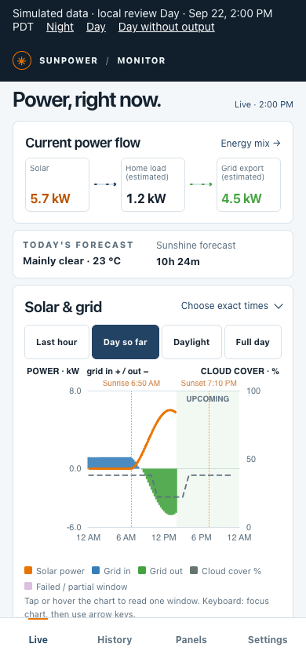
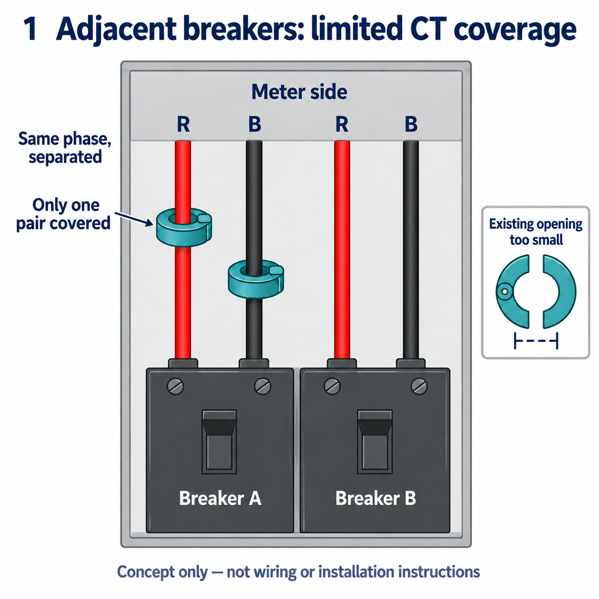

WHAT YOU NEED
采用这个方案，你需要这些。What you need to run it.
准备一台常开主机和两个账号，按安装器完成部署。Prepare one always-on host and two accounts, then follow the installer.
源码和在线演示已公开，自动安装所需的采集镜像仍未公开。现阶段可按The source and demo are public; the collector image required for automated installation is still private. For now, follow the 手动安装指南manual installation guide从源码构建或运行。 to build or run from source.
- 24 小时开机的机器An always-on machine
- 树莓派、小主机或 NAS，支持 Docker。A Raspberry Pi, mini PC or NAS with Docker.
- Cloudflare 账号A Cloudflare account
- 托管网页、接口与 D1 历史数据库。Hosts the dashboard, APIs and D1 history database.
- GitHub 账号A GitHub account
- 登录仪表盘；安装时按指引注册 OAuth App。Signs into the dashboard; register an OAuth App during setup.
历史从开始采集时积累，不导入旧 mySunPower / SunStrong 历史。主机停机或 PVS 不可达的时段会留下缺口；断网补传只覆盖已采集并入队的数据。History starts with collection; old mySunPower / SunStrong history is not imported. Host downtime or an unreachable PVS leaves gaps; offline replay covers only captured, queued records.
MAKE IT YOURS
从看一眼，到用起来。Take a look.
Then make it yours.
可以先体验模拟数据界面，再按运行手册部署并连接真实系统。Try the simulated interface first, then follow the runbook to deploy and connect your system.
点开看看，再决定。Take a look before you install.
演示运行真实仪表盘界面，使用浏览器内生成的模拟数据，不连接设备、线上 API 或数据库。可以切换白天、夜间和白天零产出场景；设置只读，设备定位已禁用。The demo runs the actual dashboard with synthetic data generated in your browser. It does not connect to devices, production APIs or a database. Switch between day, night and daytime without output; settings are read only and device location is disabled.
想在本地审阅代码？Want to review it locally? 本地预览指南Local preview guide ↗
连接自己的 PVS6Connect your own PVS6
- 01
在采集主机运行安装器Run the installer on the collector host
从正式 GitHub Release 下载安装器，在 Pi 或 NAS 的交互式终端运行。它引导浏览器授权并创建 D1、ingest 和 dashboard；无需自己配置 Actions。Download the installer from the official GitHub Release and run it in an interactive Pi or NAS terminal. It guides browser authorization and creates D1, ingest and dashboard; Actions configuration is unnecessary.
安装器与云端配置Installer and cloud setup ↗ - 02
确认访问权限Check the access gate
确认仪表盘需要 GitHub 登录，未登录的 API 请求返回 401，未携带上传密钥的请求也被拒绝。验证通过后再配置采集端。Verify that the dashboard requires GitHub login and anonymous API and unauthenticated upload requests return 401. Configure the collector only after these checks pass.
访问检查清单Access checks ↗ - 03
连接家庭采集端Connect the home collector
回到同一个终端，输入 PVS 局域网地址。安装器选择对应架构的固定镜像，执行只读检查后启动唯一的采集容器；队列和密钥保留在主机上。In the same terminal, enter the PVS LAN address. The installer selects the pinned image for your architecture, runs a read-only check and starts one collector container; queue and secrets stay on the host.
容器启动与运行说明Container setup and operation ↗ - 04
打开属于你的仪表盘Open your dashboard
打开部署后的网址，使用白名单内的 GitHub 账号登录。接着完成下面的首次使用检查。Open your deployed URL and sign in with an allowlisted GitHub account. Then complete the first-visit checks below.
首次使用指南Your first visit ↓
这里是部署路线图；完整命令、密钥配置、文件权限和故障处理请按运行手册操作。This is the setup roadmap. Follow the runbook for complete commands, secrets, file permissions, and troubleshooting. 打开完整运行手册Open the full runbook ↗

在电脑上看全貌，在手机上随手查看。The full picture at your desk.
A quick check on your phone.
YOUR FIRST VISIT
打开以后，
先确认这三件事。You're in.
Here's where to begin.
- 01
Settings · 确认位置与时区Settings · Location and time zone
保存家庭位置与时区，让天气、日出日落和历史时间对齐。Save your home location and time zone to align weather, daylight and historical timestamps.
- 02
Live · 确认采集正在运行Live · Verify collection
等待首批读数，核对采样时间与采集状态，再确认发电、用电和电网方向符合实际。Wait for the first readings, check measurement time and collector health, then verify solar, home use and grid direction against actual conditions.
- 03
History · 确认记录开始积累History · Verify the first records
采集几分钟后，在 History 确认当日已有记录，时间与 Settings 一致。若电网读数长期偏离电表，再考虑显示校准。After a few minutes, check that today’s History has records and matches your time zone. Consider display calibration if grid readings consistently differ from the utility meter. 确认是否需要校准Check whether calibration is needed ↓
可选：iPhone 通知Optional: iPhone notifications 安装 Bark 后，在自己的仪表盘 Settings → Phone notifications 填入自己的设备 Key，点击 Test and enable。默认关闭，不增加安装步骤；配置保存到云端，关闭网页后仍会检查。站点读数缺失或无效持续 10 分钟时提醒，连续三次正常检查后发送恢复通知。Install Bark, then enter your own device Key in your dashboard’s Settings → Phone notifications and select Test and enable. Notifications are off by default and add no installer steps. Configuration is saved in the cloud; checks continue after closing the page. Missing or invalid site readings lasting ten minutes trigger an alert; three consecutive normal checks trigger a recovery notification. 配置与通知范围Setup & notification scope ↗
DISPLAY CALIBRATION
确认是否需要校准Check whether calibration is needed


点击查看示意图Select to view the illustration
2 SUPPLY CTs + 2 SOLAR CTs
Partial coverage, partial readings.
在这套 200A 住宅方案中，SunPower 的四个夹子分给供电和太阳能路径，各两个。供电导线在用户侧分开排列，现有夹子无法夹全；完整测量点又在供电公司限制安装的电表侧。因此，显示的 Load 可能只反映部分供电路径，而非全屋用电。This 200A installation uses four SunPower CTs: two for supply, two for solar. Separated supply conductors cannot all fit inside the available CTs; the common measurement point is in the utility-controlled meter compartment. Reported Load may therefore represent only part of the supply, rather than whole-home usage.
对照电表后，校准可修正稳定的比例偏差；独立变化的漏测负载无法靠比例补出。Utility comparison can identify a stable ratio to correct. A ratio cannot recover independently changing, unmeasured loads.
GitHub 图文说明与校准方法（英文）Illustrated guide & calibration on GitHub ↗